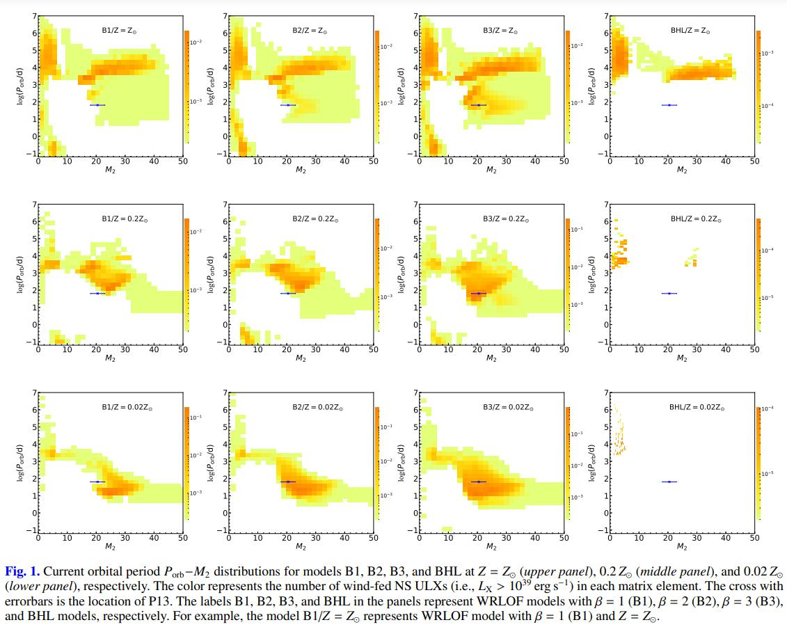
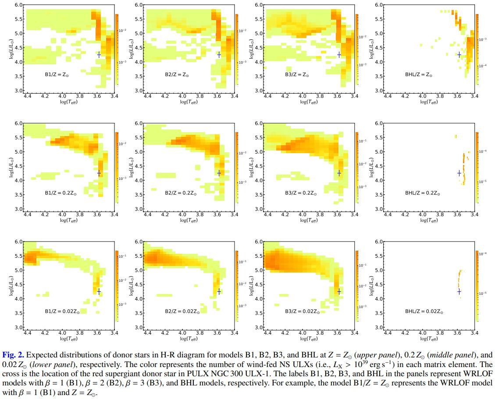

Ultra-luminous X-ray Source (ULX)
The basic introduction slides could be found in this pdf file (Chinese). More specific details could be obtained via my graduate thesis (Chinese).
Accreting Neutron Star with Wind Roche-lobe Overflow
This article had been published in A&A. This paper focus on the Neutron Star ULXs and firstly displayed the binary parameters of Wind Roche-lobe Overflow system.
DOI:
https://doi.org/10.1051/0004-6361/202140792
Abstract:
Very recently, wind Roche-lobe overflow (WRLOF) has been suggested as a possible mass transfer mechanism for ultra-luminous X-ray sources (ULXs) and, to date, two neutron-star (NS) ULXs (i.e., NGC 7793 P13 and NGC 300 ULX-1) are remarkable and hard to understand in the current, usual RLOF picture. In this work, we test if the two sources could fit into the WRLOF paradigm. By using an evolutionary population synthesis (EPS) method, we modeled the population of NS ULXs with (super)giant donors, taking the WRLOF accretion mode into account. We find that the population of wind-fed NS ULXs in the WRLOF mode is distinct in numbers and binary parameters from that in the traditional Bondi-Hoyle-Lyttleton (BHL) mode, and it is strongly metallicity dependent. The number of NS ULXs with (super)giant donors can be enhanced greatly, by one or two orders of magnitude, depending on the metallicity adopted. Sources with massive (∼ 15 − 40 M⊙) (super)giant donors dominate wind-fed NS ULXs in the very low metallicities, while sources in near solar cases are dominated by a red supergiant (RSG) with a lower mass M2 < 10 M⊙ instead. Moreover, the two NS ULXs can be well reproduced in the WRLOF paradigm, which significantly enriches our understanding of the nature of ULXs and the population. We also present the current distributions of binary parameters of wind-fed NS ULXs, which may be further testified by future high-resolution optical and X-ray observations of these populations.
Table and Figures
 
Population Synthesis on ULXs in Ring Galaxies
Simulation Program
There are 4 file folders in this project. All the codes are available on github. More detailed documents for python files can be downloaded here(Main.py & utils.py)
Fortran0415
modified fortran code BSE
- popbin_mine.f: main function for POPBIN program, get the evolution details of every stage.
- popbin_hanchen.f: POPBIN program. This program is for calculating the birth rate of each binary systems when the Neutron star born. More details are available in README_BSE, README_SSE and README_NEW.
The history of modified could be found in ./Fortran0415/note.txt.
You can run the program on bash:
make popbin
./popbin # run popbin program, main program is popbin_mine.f
FortranOri
This is the original BSE code for backup. There are few demos. You can run them on bash following few steps below:
sudu apt install make gfortran # install environment
make popbin bse sse
./popbin # run popbin program, main program is popbin.f which generates plenty of binaries in this program.
./bse # run bse program, main program is bse.f which generates one particular binary
./sse # run sse program, main program is sse.f which generates one particular single star.
Python
This file folder contains all the analysis python program. More details could be found in its document: ./python/README.md.
Data
This is the file folder for saving data and will not be uploaded to github.
PaperPlotData
This is the file folder for saving mesa data and popbin data with label being 1117.
- 1117_paper.mat: popbin data with label being
1117 - hanchen_first_neutron1124.out: popbin result for mesa plot.
- Lx_N1207.npy: selected data from mesa output data.